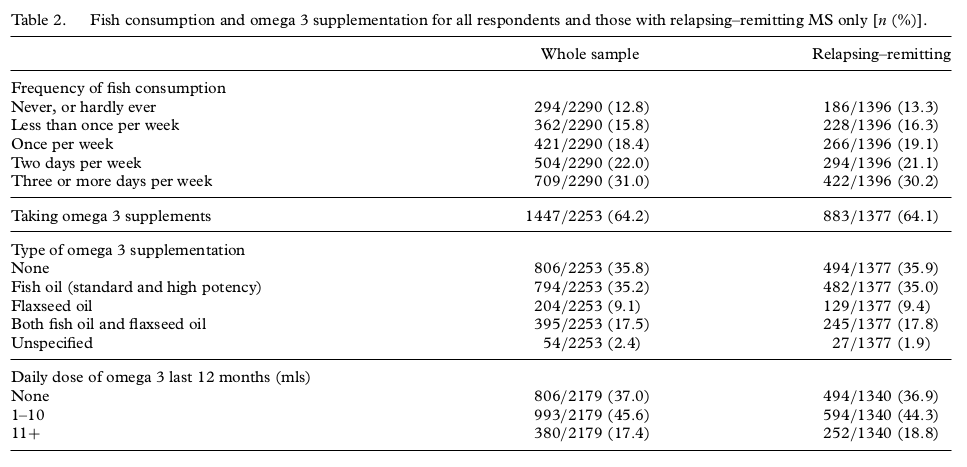

<?xml version="1.0" encoding="UTF-8"?>
<table title="table2" id="table2" class="tabcontent" xmlns="http://www.w3.org/1999/xhtml">
 <tr>
  <td>
   
   <p>../../cm-ucl/corpus-oa-pmr-v02/10.3109_00207454.2013.803104/tables/table2/table.png</p>
  </td>
  <td>
   <table class="table">
    <caption/>
    <tr>
     <th/>
     <th class="cell">Whole sample </th>
     <th class="cell">Relapsing– remitting </th>
    </tr>
    <tr>
     <td class="cell">Frequency of fish consumption</td>
     <td class="empty"/>
     <td class="empty"/>
    </tr>
    <tr>
     <td class="cell">Never, or hardly ever</td>
     <td class="cell">294/2290 (12.8)</td>
     <td class="cell">186/1396 (13.3)</td>
    </tr>
    <tr>
     <td class="cell">Less than once per week</td>
     <td class="cell">362/2290 (15.8)</td>
     <td class="cell">228/1396 (16.3)</td>
    </tr>
    <tr>
     <td class="cell">Once per week</td>
     <td class="cell">421/2290 (18.4)</td>
     <td class="cell">266/1396 (19.1)</td>
    </tr>
    <tr>
     <td class="cell">Two days per week</td>
     <td class="cell">504/2290 (22.0)</td>
     <td class="cell">294/1396 (21.1)</td>
    </tr>
    <tr>
     <td class="cell">Three or more days per week</td>
     <td class="cell">709/2290 (31.0)</td>
     <td class="cell">422/1396 (30.2)</td>
    </tr>
   </table>
   <p>../../cm-ucl/corpus-oa-pmr-v02/10.3109_00207454.2013.803104/tables/table2/table.svg.html</p>
  </td>
 </tr>
</table>
